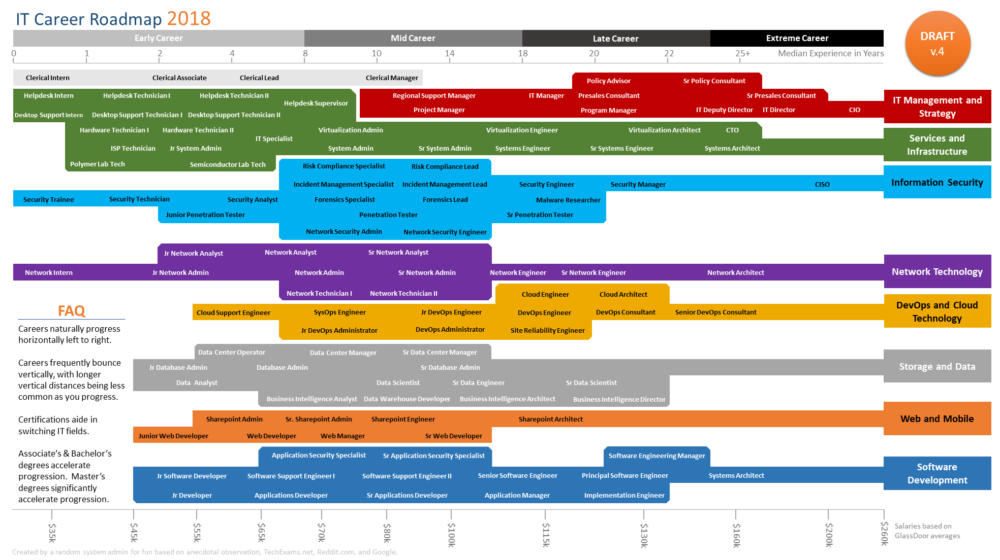
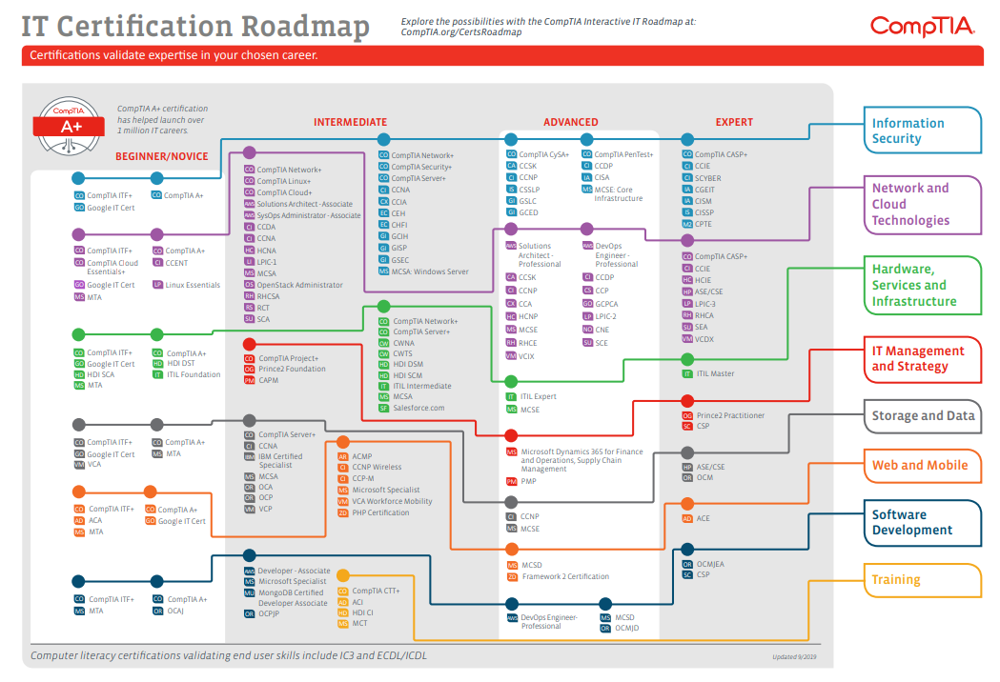

IT Career Roadmap :
sumber : https://www.comptia.org

Certifications :
- Beginer
- CompTIA Network+
- CompTIA Security+
- Partner Certifications
- Intermediate
- CompTIA Project+
- CompTIA CySA+
- CompTIA PenTest+
- Partner Certifications
- Advance
- CompTIA CASP+
- Partner Certifications
-
$80251/thn
- System/s Administrator
- Network Engineer
- System/s Engineer
- Scan and assess network for vulnerabilities
- Monitor network traffic for unusual activity
- Investigate a violation when a breach occurs
- Install and use software to protect sensitive information
- Prepare reports that document security breaches
- Research new security technology
- Help end-users when they need to install or learn about new products and procedures
18709 looking
Job Titles :
-
$94,379
- Security Analyst
- Security Engineer
- Pen Tester
- Manage and configure tools to monitor network activity
- Conduct penetration testing
- Analyze reports from tools to identify unusual network behavior
- Plan and recommend changes to increase the security of the network
- Apply security patches to protect the network
- Help end-users when they need to install or learn about new products and procedures
- Train beginner cybersecurity professionals
53,739 looking
Job Titles :
-
$105,033
- Senior Security Engineer
- Senior Security Analyst
- CISO
- Manage and configure tools to monitor network activity
- Research the latest IT security trends
- Develop security standards and best practices for the organization
- Recommend security enhancements to management or senior staff
- Develop and update business continuity and disaster recovery protocols
- Help end-users when they need to install or learn about new products and procedures
- Manage and train team
44,331 looking
Job Titles :
Certification :
- CompTIA It Network+ certification :
- Networking Concepts 23%
- 2.0 Infrastructure 18%
- 3.0 Network Operations 17%
- 4.0 Network Security 20%
- 5.0 Network Troubleshooting and Tools 22%
- Total 100%
- CompTIA Security+Certification :
- 1.0 Threats, Attacks and Vulnerabilities 21%
- 2.0 Technologies and Tools 22%
- 3.0 Architecture and Design 15%
- 4.0 Identity and Access Management 16%
- 5.0 Risk Management 14%
- 6.0 Cryptography and PKI 12%
- Total 100%
- CompTIA CySA+ Certification :
- 1.0 Threat and Vulnerability Management 22%
- 2.0 Software and Systems Security 18%
- 3.0 Security Operations and Monitoring 25%
- 4.0 Incident Response 22%
- 5.0 Compliance and Assessment 13%
- Total 100%
- CompTIA Project+ Certification :
- 1.0 Project Basics 36%
- 2.0 Project Constraints 17%
- 3.0 Communication and Change Management 26%
- 4.0 Project Tools and Documentation 21%
- Total 100%
- CompTIA PenTest+ Certification :
- 1.0 Planning and Scoping 15%
- 2.0 Information Gathering and Vulnerability Identification 22%
- 3.0 Attacks and Exploits 30%
- 4.0 Penetration Testing Tools 17%
- 5.0 Reporting and Communication 16%
- Total 100%
- ISACA
- Certified Information Systems Auditor (CISA)
- Certified in Risk and Information Systems Control (CRISC)
- Certified Information Security Manager (CISM)
- Certified in the Governance of Enterprise IT (CGEIT)
- SANS/GIAC
- Cisco (CCT, CCNA, CCIE)
- Entry (CCT)
- Associate (CCNA)
- Professional (CCNP)
- Expert (CCIE)
- Architect (CCAr)
-
The table below lists the domains measured by the full examination and the extent to
which they are
represented.
Domain and percentage of examination :
-
The table below lists the domains measured by the full examination and the extent to
which they are represented.
Domain and percentage of examination :
----------------------------------------------------
-
The table below lists the domains measured by the full examination and the
extent to which they are represented.
Domain and percentage of examination :
Core 1 (220-1001)
-
The table below lists the domains measured by the full examination and the extent to
which
they are
represented.
Domain and percentage of examination :
Core 1 (220-1001)
-
The table below lists the domains measured by the full examination and the
extent to which they are represented.
Domain and percentage of examination :
Core 1 (220-1001)
-
Validate skills in IT audit, security, governance and risk. ISACA certifications are
based on primary responsibility,
rather than a defined level :
-
Validate skills in security administration, management, audit, and software security;
offering more
than 30 specialized information security certifications that correspond to specific job
duties.
- Validates networking skills using Cisco equipment
and technologies. Cisco organizes their certifications across 5 levels:
-----------------------------------------------
CompTIA CASP+
CASP+ is an advanced certification that validates critical thinking and judgment across a spectrum of security disciplines in complex environments
ISC2 CISSP
ISC2 is best recognized for its CISSP credential. CISSP recognizes information security leaders who understand cybersecurity strategy.